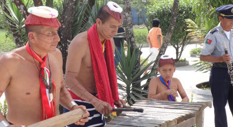
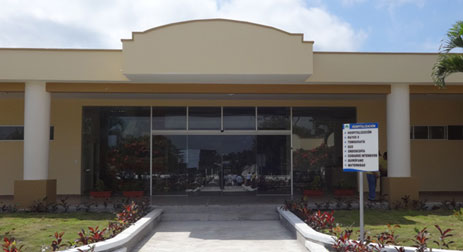
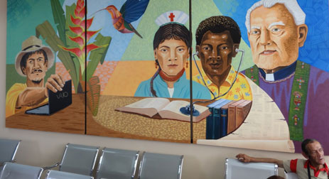
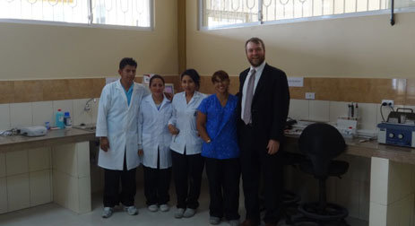
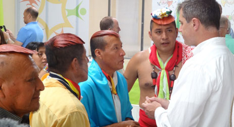
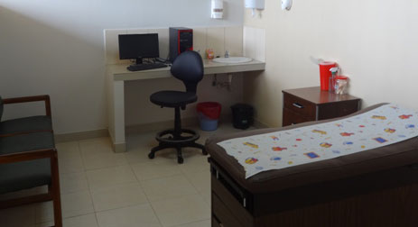
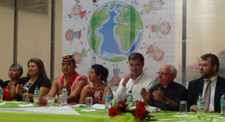
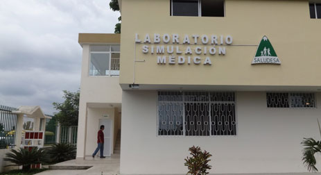

High-quality health services for rural Ecuador: Training family doctors
In December 2010, I first made contact with Dr. David Gaus, who had recently been named “Regional Social Entrepreneur of the Year for Latin America” by the Schwab Foundation. As founder of the sister NGOs Andean Health & Development (AHD) in the USA and SALUDESA in Ecuador, Dr. Gaus received this award for his pioneering work in bringing quality health care to rural and vulnerable populations and training family doctors through a hospital in the remote town of Pedro Vicente Maldonado. Despite already having one sustainable rural hospital, he planned to construct a second hospital to expand health services to other underserved areas of the country, and we at the MIF were in a position to provide additional funding to complement the donations that he had secured.
David Gaus first moved to Ecuador to introduce an innovative model for providing high-quality health care. He believed that small hospitals in rural areas would complement the existing urban health care infrastructure, and could be the missing piece the country’s health care system needed.
Dr. Gaus and AHD built “Hospital Pedro Vicente Maldonado,” and within six years addressed many of the challenges facing small hospitals like this throughout the developing world. They learned how to provide care by employing and training only local Ecuadorians. They figured how to finance the hospital’s operations in-country, principally through an innovative, unprecedented contract with Ecuador’s national social security system. They turned away no one in a community where the average family’s monthly income is about $200. They learned how to form partnerships with the public health care system, laying ground for a public-private provider network.
One problem, finding doctors and nurses, emerged as the hospital grew. Initially, personnel came from Quito, but they frequently felt out of place, as folks in the countryside view their health differently than people in the capital do. In 2009, AHD set up a family physician training program that emphasizes caring for patients in a way that makes sense to them. These doctors also learn how to work within the health care system as a whole and find solutions to its many problems. They are trained to think from the perspective of the local population and to lead health care teams that care for communities from all angles.
Today, AHD is taking on training 1,000 family physicians to work in rural health facilities around the country. At the core of the program is a 60-bed hospital and family doctor training center in the city of Santo Domingo de los Tsáchilas that opened in June 2014. It boasts a modern intensive care unit, an emergency room, birthing rooms, two surgery units, outpatient services, laboratory services, a pharmacy, and state-of- the-art technology and equipment. It will increase the local supply of hospital beds by over 30% and will employ more than 20 doctors in all specializations, as well as psychologists, physical therapists, and language and occupational therapists. As part of its alternative medicine alliance, it will also have an acupuncture specialist and a space for traditional healers from the neighboring indigenous Tsáchila communities (many Ecuadorians believe that Tsáchila shamans hold the secrets of the rainforest and have powers that heal when western medicine fails). The hospital is projected to treat over 40,000 patients annually, 70% of which will be women, children, and members of the Tsáchila communities.
Now, the project is also connected to the national education system. In January 2014, AHD/Saludesa launched a Ministry of Health residency program, through which it will help train the Ministry’s physicians in family medicine. In partnership with the Catholic University of Ecuador, SALUDESA is covering 100 of the 800 physicians being trained across the country. AHD educates doctors using medical simulation technology and with a curriculum designed in partnership with JUMP Simulation in Peoria, IL and Northwestern University’s Feinberg School of Medicine.
The total cost of the hospital was a US$4 million, of which US$800,000 was provided via a loan from the IDB’s Social Entrepreneurship Program (SEP), administered by the MIF. The SEP is also contributing US$200,000 in technical cooperation funds, which will be used for designing a new training curriculum for rural nurses, carrying out rural community health campaigns, and conducting a baseline study of the most prevalent ailments in the Tsáschila communities, in order to design the most appropriate medical interventions for their specific needs.
The ribbon-cutting ceremony for the new hospital was attended by local authorities, the Governor of the Tsáchila community, the Dean of Ecuador’s Catholic University, the IDB’s Representative in Ecuador, Morgan Doyle, and dozens of medical doctors from the USA who had contributed to the fundraising campaign.
Congratulations to AHD/Saludesa for forging ahead, making a significant direct impact on the health of very vulnerable populations in Ecuador, and training the rural health care leaders of tomorrow.
[Several pictures below…]

Tsáchila musicians

Main Entrance

One of two murals depicting intercultural roots of the hospital
Second of two murals

Laboratory, staff and Morgan Doyle, IDB Rep in Ecuador

Dr. David Gaus consulting with Tsáchila leaders

Pediatric room

Local authorities and guests of honor at the inauguration

Laboratory and medical simulation training center